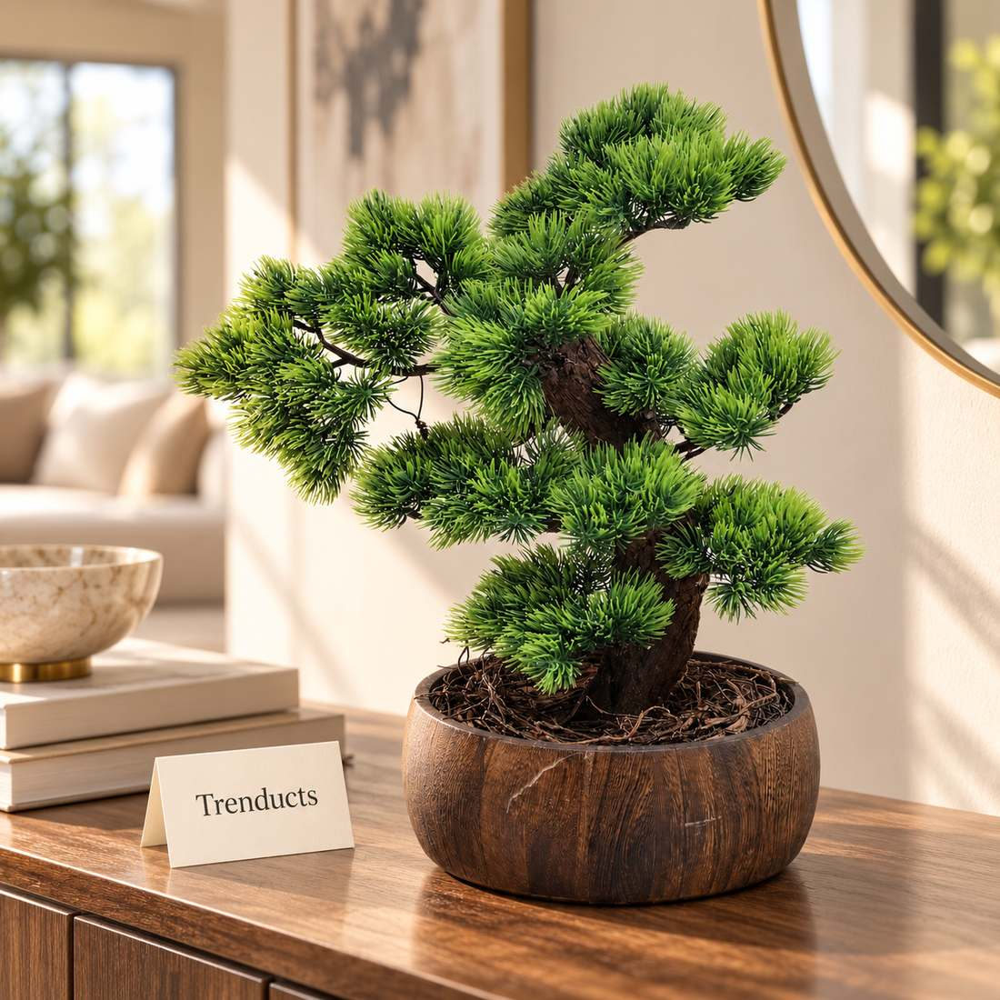
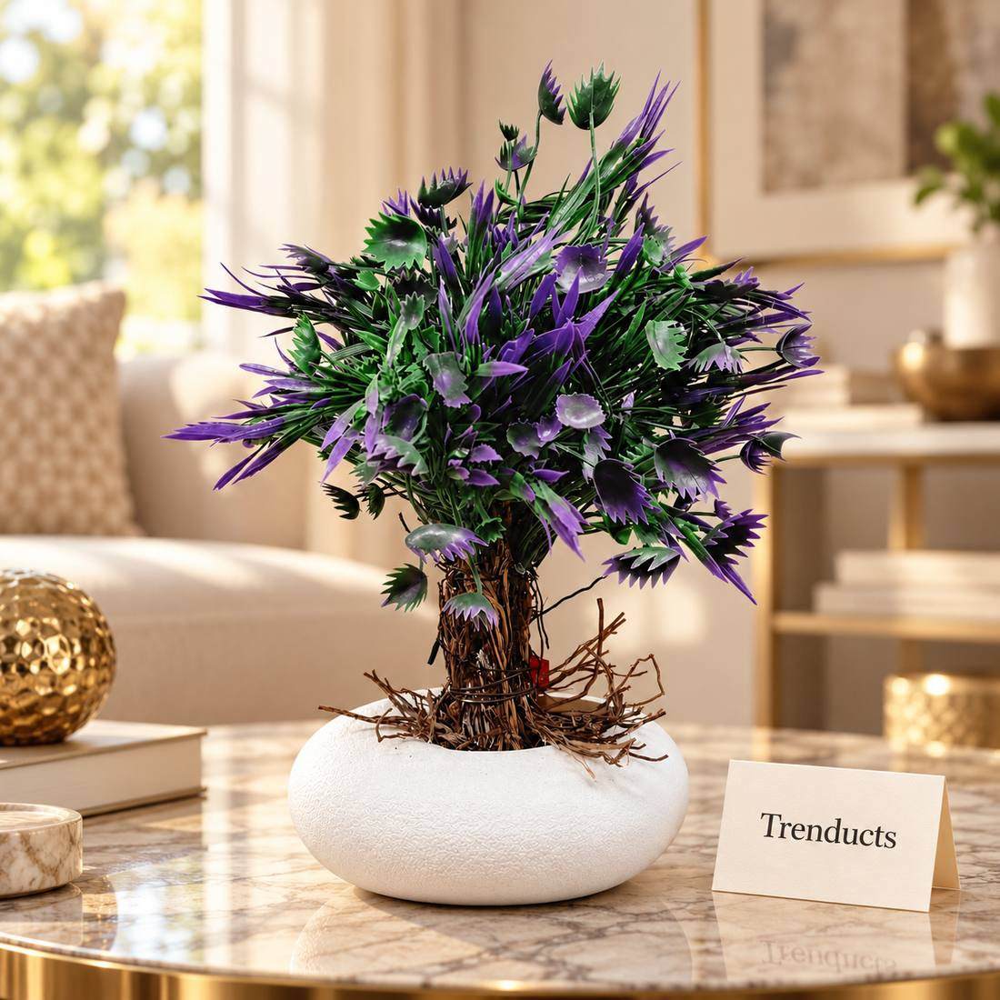
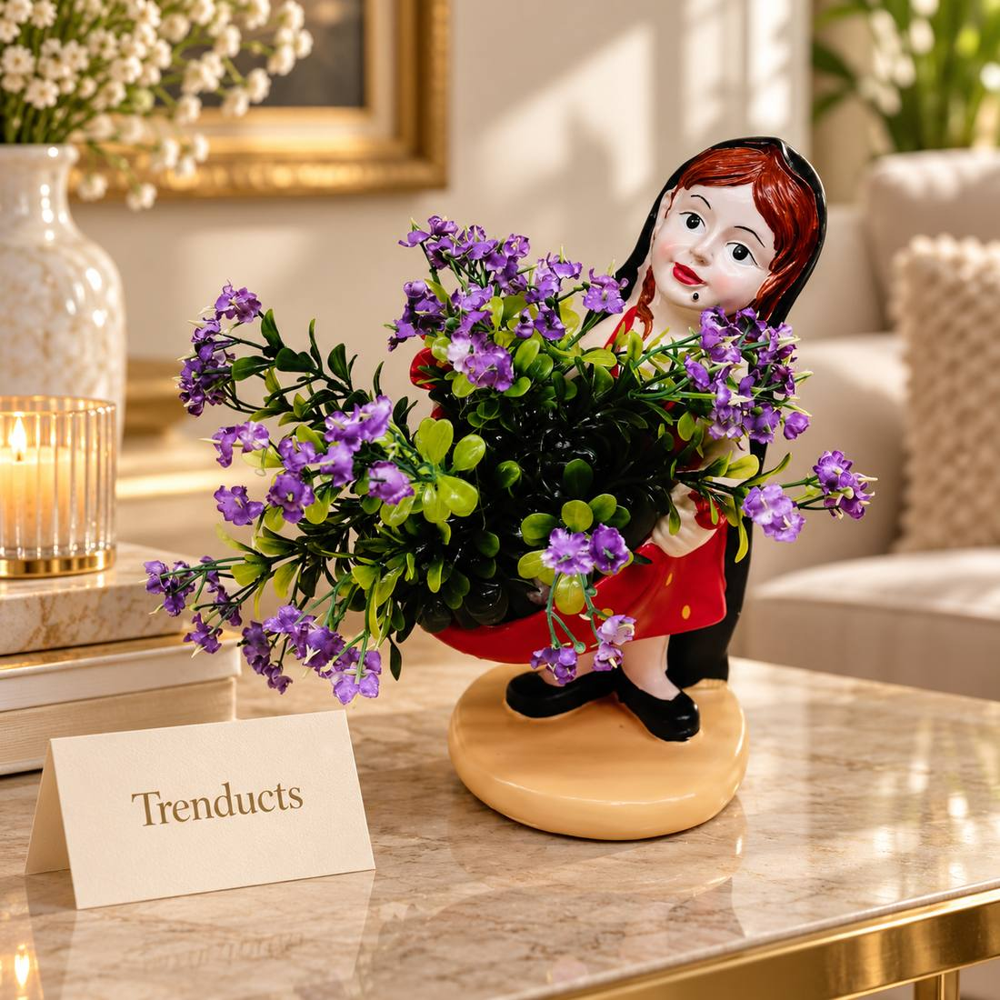

Simple, tasteful ways to decorate a Pakistani home in green and white for Jashn-e-Azadi, with plants, flags, lights and a few decor pieces that last beyond August.



Every August, Pakistan turns green and white. Flags flutter from rooftops and car windows, streets in Lahore and Karachi fill with badges, banners and buntings, and children wear green and white clothes to school celebrations. At midnight on the 13th, the sky lights up, and on the morning of the 14th, families gather to watch the flag-hoisting ceremonies on television.
Decorating your home for Independence Day is a lovely way to share in the spirit with your children and neighbours. This guide offers simple ideas that look good, are safe, and use some pieces you can keep all year.
Before decorating, remind children how to treat the national flag respectfully. Hang it properly, with the white portion near the pole. Do not let it touch the ground, and avoid using it as a tablecloth or seat covering. After the celebrations, fold and store flags rather than throwing them away. Old, worn flags should be retired respectfully. Teaching these values is part of the celebration.
The rooftop flag is a Pakistani tradition. Use a sturdy pole fixed securely, as August winds and monsoon storms can be strong. At the entrance, green and white buntings or paper chains across the gate make a cheerful welcome. Children love making paper buntings themselves, which turns decoration into a family activity a few days before the 14th.
Green is the colour of the flag, and plants are the most natural way to bring it inside. Place potted plants by the main door, on the dining table and in the lounge. Real plants like money plant, areca palm and snake plant thrive indoors with little care. For spots without sunlight, artificial plants and bonsai trees in good-looking pots keep the green going all year. Many families pick decorative greenery from the Trenducts decorative and showpieces collection, which stays useful long after August.
Green and white fairy lights along the balcony railing or around windows make the house glow on the night of the 13th. Choose LED lights, which use less electricity and run cool. Check wiring for damage before hanging, keep connections away from rain, and switch them off when the family sleeps. A few candles or lanterns on the dining table add a festive touch to the Independence Day dinner.
Set the dinner table in green and white for the evening of the 14th:
Simple touches like these make an ordinary family dinner memorable.
Decoration is more meaningful when children understand the day. Tell them the story of 1947, read about Quaid-e-Azam and Allama Iqbal, or watch a documentary together. Let them draw the flag, make a model of the Minar-e-Pakistan from cardboard, or sing milli naghmay. Many schools hold events, and children can carry their own handmade decorations.
Celebrations sometimes include aerial firing, which is illegal and has killed innocent people. Firecrackers and loud vehicle silencers also cause injuries and disturb others. Choose peaceful ways to celebrate, and teach children that loving the country means caring for its people.
Take down buntings and flags respectfully and store them for next year. Keep the plants and decor pieces in place; they make the home feel fresh all year round. A green, cared-for home is a fine everyday tribute to the country.
Independence Day decoration does not need to be expensive or loud. Fly the flag respectfully, decorate the entrance, bring green indoors with plants, add safe lights and set a themed table. Most importantly, share the meaning of the day with your children. That is the decoration that lasts the longest.